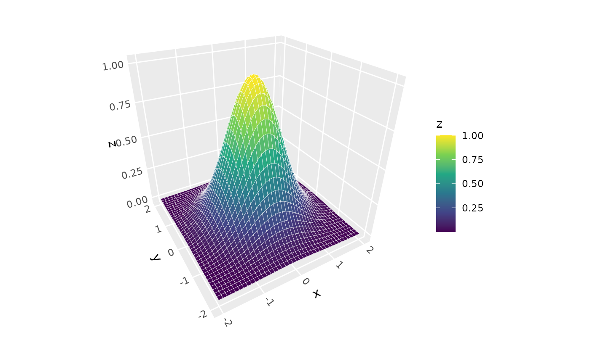
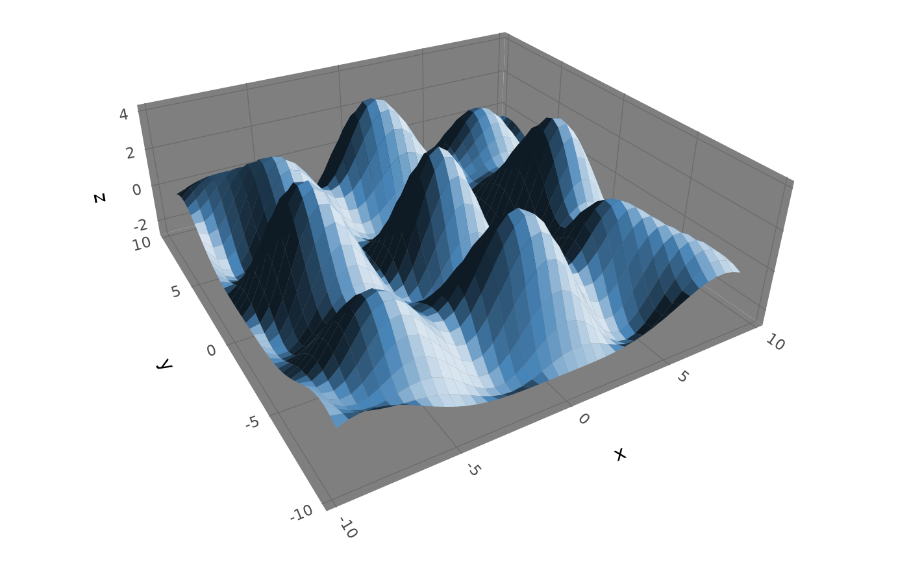
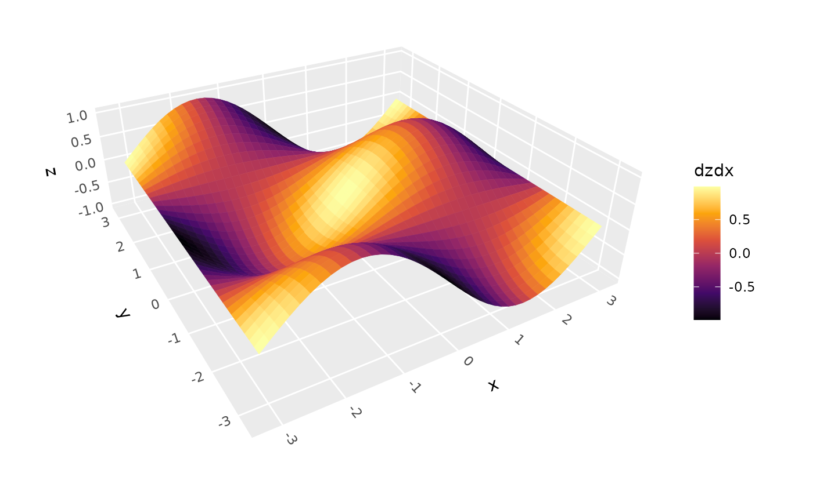
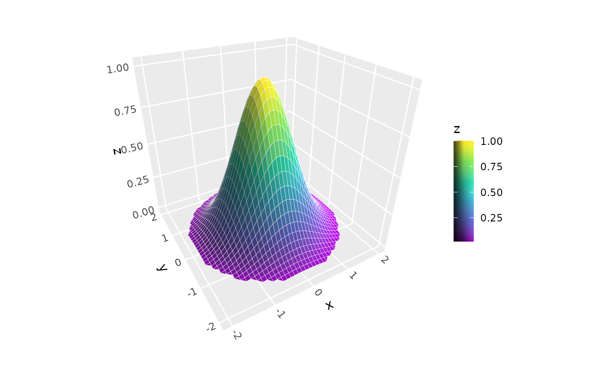

Creates 3D surfaces by evaluating a function f(x,y) = z over a regular grid.
The function is evaluated at each grid point and the resulting surface is rendered
as in stat_surface_3d().
Usage
stat_function_3d(
mapping = NULL,
fun = NULL,
data = NULL,
geom = GeomPolygon3D,
position = "identity",
xlim = NULL,
ylim = NULL,
n = NULL,
grid = NULL,
direction = NULL,
light = ggcube::light(),
na.rm = FALSE,
show.legend = NA,
inherit.aes = TRUE,
color = NULL,
colour = NULL,
...
)Arguments
- mapping
Set of aesthetic mappings created by
aes(). Since this stat generates its own data, typically only used for additional aesthetics likefillorcolorbased on computed variables. Fill is mapped toafter_stat(z)by default.- fun
Function to evaluate. Must accept two arguments (vectors corresponding to x and y axis values) and return a numeric vector of z values. Required parameter.
- data
The data to be displayed in this layer. Usually not needed since the stat generates its own data from the function.
- geom
The geometric object to use display the data. Defaults to GeomPolygon3D for proper 3D depth sorting.
- position
Position adjustment, defaults to "identity". To collapse the result onto one 2D surface, use
position_on_face().- xlim, ylim
Numeric vectors of length 2 giving the range for x and y values. If
NULL(default), uses the scale ranges from the plot, which can be set viaxlim()andylim(), or trained by supplying data to the plot.- grid, n, direction
Arguments passed to
make_tile_grid()specifying the geometry, resolution, and orientation of the surface grid. See?make_tile_grid()for details.- light
A lighting specification object created by
light(), or NULL to disable shading.- na.rm
If
TRUE, removes missing values from function evaluation results. IfFALSE, missing values will cause an error. Default isFALSE.- show.legend
Logical indicating whether this layer should be included in legends.
- inherit.aes
If
FALSE, overrides the default aesthetics.- ...
Other arguments passed on to the geom (typically
geom_polygon_3d()), such assort_methodandscale_depthas well as aesthetics likecolour,fill,linewidth, etc.
Aesthetics
stat_function_3d() generates its own x, y, z coordinates, so typically no
positional aesthetics are needed in the mapping. However, you can use computed
variables with after_stat():
Computed variables
x,y,z: Grid coordinates and function valueslight: Computed lighting value (numeric for most methods, hex color fornormal_rgb)normal_x,normal_y,normal_z: Surface normal componentsslope: Gradient magnitude from surface calculationsaspect: Direction of steepest slope from surface calculationsdzdx,dzdy: Partial derivatives from surface calculations
See also
stat_surface_3d() for surfaces from existing grid data,
light() for lighting specifications, coord_3d() for 3D coordinate systems.
Examples
library(ggplot2)
# Basic function surface
ggplot() +
stat_function_3d(fun = function(a, b) exp(-(a^2 + b^2)),
xlim = c(-2, 2), ylim = c(-2, 2),
light = NULL, color = "white") +
coord_3d() +
scale_fill_viridis_c()

# Wave function with lighting
wave_fun <- function(x, y) cos(x) + cos(y) + cos(x+y) + cos(sqrt(x^2 + y^2))
ggplot() +
stat_function_3d(fun = wave_fun, fill = "steelblue",
xlim = c(-3*pi, 3*pi), ylim = c(-3*pi, 3*pi),
light = light(method = "direct", mode = "hsl",
contrast = .8, direction = c(1, 0, 1))) +
coord_3d(scales = "fixed") + theme_dark()

# Use after_stat to access computed surface-orientation variables
ggplot() +
stat_function_3d(aes(fill = after_stat(dzdx),
color = after_stat(dzdx)),
fun = function(x, y) sin(x) * cos(y),
xlim = c(-pi, pi), ylim = c(-pi, pi),
n = 60, light = NULL) +
scale_fill_viridis_c(option = "B") +
scale_color_viridis_c(option = "B") +
coord_3d(scales = "fixed")
#> Error in stat_function_3d(aes(fill = after_stat(dzdx), color = after_stat(dzdx)), fun = function(x, y) sin(x) * cos(y), xlim = c(-pi, pi), ylim = c(-pi, pi), n = 60, light = NULL): Problem while mapping stat to aesthetics.
#> ℹ Error occurred in the 1st layer.
#> Caused by error:
#> ! object 'dzdx' not found
# Use "filtering" functions to constrain output domain
ggplot() +
stat_function_3d(fun = function(a, b) {
ifelse(sqrt(a^2 + b^2) < 2, exp(-(a^2 + b^2)), NA)},
xlim = c(-2, 2), ylim = c(-2, 2), color = "white") +
coord_3d() +
scale_fill_viridis_c() +
guides(fill = guide_colorbar_3d())
#> Warning: Removed 1348 rows containing missing values or values outside the scale range
#> (`geom_polygon3d()`).

# Specify alternative grid geometry
ggplot() +
stat_function_3d(fun = function(a, b) exp(-(a^2 + b^2)),
xlim = c(-2, 2), ylim = c(-2, 2), color = "white",
grid = "tri", n = 30, direction = "y") +
coord_3d() +
scale_fill_viridis_c() +
guides(fill = guide_colorbar_3d())
